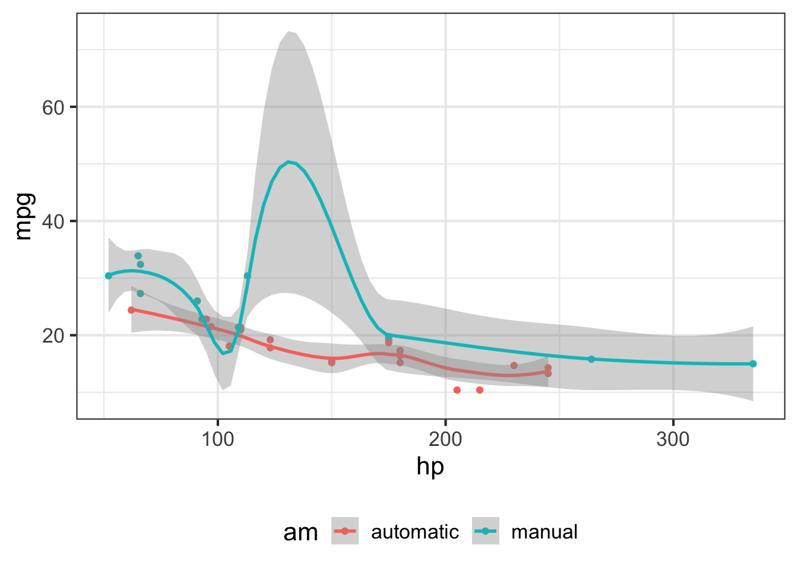

slice_plot( exp(-3*t) ~ t, domain( --fill in domain-- ))MOSAIC Calculus
Preface
Tips in draft
GIT_TRACE=1 git push
or
git push --force origin main
Welcome to calculus
Calculus is the set of concepts and techniques that form the mathematical basis for dealing with motion, growth, decay, and oscillation. The phenomena can be as simple as a ball arcing ballistically through the air or as complex as the airflow over a wing that generates lift. Calculus is used in biology and business, chemistry, physics and engineering. It is the foundation for weather prediction and understanding climate change. It is the basis for the algorithms for heart rate and blood oxygen measurement by wristwatches. It is a key part of the language of science. The electron orbitals of chemistry, the stresses of bones and beams, and the business cycle of recession and rebound are all understood primarily through calculus.
Calculus has been central to science from the very beginnings. It is no coincidence that the scientific method was introduced and the language of calculus was invented by the same small group of people during the historical period known as the Enlightenment. Learning calculus has always been a badge of honor and an entry ticket to professions. Millions of students’ career ambitions have been enhanced by passing a calculus course or thwarted by lack of access to one.
In the 1880s, a hit musical featured “the very model of a modern major general.” One of his claims for modernity: “I’m very good at integral and differential calculus.” (Watch here.)
What was modern in 1880 is not modern anymore. Yet, amazingly, calculus today is every bit as central to science and technology as it ever was and is much more important to logistics, economics and myriad other fields than ever before. The reason is that science, engineering, and society have now fully adopted the computer for almost all aspects of work, study, and life. The collection and use of data is growing dramatically. Machine learning has become the way human decision makers interact with such data.
Think about what it means to become “computerized.” To take an everyday example, consider video. Over the span of a human life, we moved from a system which involved people going to theaters to watch the shadows recorded on cellulose film to the distribution over the airwaves by low-resolution television, to the introduction of high-def broadcast video, to on demand streaming from huge libraries of movies. Just about anyone can record, edit, and distribute their own video. The range of topics (including calculus) on which you can access a video tutorial or demonstration is incredibly vast. All of this recent progress is owed to computers.
The “stuff” on which computers operate, transform, and transmit is always mathematical representations stored as bits. The creation of mathematical representations of objects and events in the real world is essential to every task of any sort that any computer performs. Calculus is a key component of inventing and using such representations.
You may be scratching your head. If calculus is so important, why is it that many of your friends who took calculus came away wondering what it is for? What’s so important about “slopes” and “areas” and how come your high-school teacher might have had trouble telling you what calculus is for?
The disconnect between the enthusiasm expressed in the preceding paragraphs and the lived experience of students is very real. There are two major reasons for that disconnect, both of which we tackle head-on in this book.
First, teachers of mathematics have a deep respect for tradition. Such respect has its merits, but the result is that almost all calculus is taught using methods that were appropriate for the era of paper and pencil–not for the computer era. As you will see, in this book we express the concepts of calculus in a way that carries directly over to the uses of calculus on computers and in genuine work.
Second, the uses of calculus are enabled not by the topics of Calc I and Calc II alone, but the courses for which Calc I/II are a preliminary: linear algebra and dynamics. Only a small fraction of students who start in Calc I ever reach the parts of calculus that are the most useful. Fortunately, there is a large amount of bloat in the standard textbook topics of Calc I/II which can be removed to make room for the more important topics. We try to do that in this book.
Computing and apps
The text provides two complementary ways to access computing. The most intuitive is designed purely to exercise and visualize mathematical concepts through mouse-driven, graphical apps. To illustrate, here is an app that we’ll use in Block 6. You can click on the snapshot to open the app in your browser.

More fundamentally, you will be carrying out computing by composing computer commands and text and having a computer carry out the commands. One good way to do this is in a sandbox–a kind of app which provides a safe place to enter the commands. You’ll access the sandbox in your browser (click on the image below to try it now).

Once you’ve entered the computer commands, you press the “Run” button to have the commands carried out. (You can also press CTRL+Enter on your keyboard.)
An important technique for teaching and learning computing is to present scaffolding for computer commands. At first, the scaffolding may be complete, correct commands that can be cut-and-pasted into a sandbox where the calculation will be carried out. Other times it will be left to the student to modify or fill in missing parts of the scaffolding. For example, when we introduce drawing graphs of functions and the choice of a domain, you might see a scaffold that has blanks to be filled in:
You can hardly be expected at this point to make sense of any part of the above command, but soon you will.
After you get used to computing in a sandbox, you may prefer to install the R and RStudio software on your own laptop. This usually provides a faster response to you and lowers the load on the sandbox cloud servers being used by other students.
Experienced R users may even prefer to skip the sandbox entirely and use the standard resources of RStudio to edit and evaluate their computer commands. You’d use exactly the same R commands regardless of whether you use a cloud server or your own laptop.
Exercises and feedback
Learning is facilitated by rapid, formative feedback. Many of the exercises in this book are arranged to give this.
LINK TO AN EXERCISE HERE
Practice, practice, practice
It’s a good practice to practice! The Drill app provides multiple-choice questions designed to be answered at a glance or a very small amount of work on scratch paper. Once you choose a topic, the questions are presented in random order. You get immediate feedback on your answer. If your answer was wrong, the question is queued up again so that you’ll have another chance. At the point where you are answering almost all questions correctly, you’re ready to move on.
\(\ \)
Software for the course
You can get started with the course using just a web browser. In addition to this textbook, bookmark the SANDBOX and DRILL QUESTIONS so you can get to them easily.
If you find that the web sites are too slow, you can install both the sandbox and drill apps on your own computer. (You’ll need a computer running Windows or OS-X or Linux. Smartphones or tablets won’t let you do this.)
If you already use RStudio, you can skip to step (3). You can use the MOSAIC Calculus software directly from RStudio as an alternative to the sandbox. See step (5).
Here are the steps. Steps (1), (2), and (3) together will take almost half an hour. Once they are completed, you will not need to do them again on that computer.
If you already have R and RStudio installed, skip to Step (3).
- Install the R software. You can find reasonable video instructions on the Internet, for instance at YouTube
- Install RStudio RStudio installer
Not everyone has full permission to install external apps on their laptop. This is particularly true when the computer has been issued by your educational institution. If you are in this situation or, for other reasons, can’t complete steps (1) and (2) completely, seek help from a local expert. Both (1) and (2) have been installed by students on tens of millions of computers.
- Install the MOSAIC Calculus packages within R. Launch the RStudio app, just as you would launch any other app.
- When the RStudio app starts, the upper left pane will be labeled “Console” and there will be a prompt:
> - Copy and paste these commands, one at a time, after the console prompt, pressing return after each command:
- When the RStudio app starts, the upper left pane will be labeled “Console” and there will be a prompt:
install.apps(c("remotes", "distillr"))
remotes::install_github("dtkaplan/Zcalc")The first command will take about 15 seconds to complete and will display some messages in the Console, which you can ignore. NOTE: If you are given a message asking if you want to install in a “personal” or “private” library, say yes. But if you administer a system used by multiple people who need the software, select the option to install for all users.
The second command will take about 5 minutes. Hundreds of incomprehensible messages will appear in the Console, all of which you can ignore. (If you are are working from a previous installation of R, you may be asked to update existing packages. Since you can do this at any time in the future, decline the update now.
- On a daily basis, whenever you need to use the MOSAIC Calculus software.
- Open the RStudio App in the usual way for your operating system.
- In the RStudio console, give these two commands after the console prompt:
library(Zcalc)
Sandbox()The computing sandbox will open in a browser tab. Closing that tab will return control to the console.
When you want to practice with the drill questions for this book, give the command Drill() instead of Sandbox().
Most people find it convenient, when using the software several times a week, simply to keep the RStudio session open and similarly with the browser tab with the Sandbox.
- Not required. Many students are taught how to use RStudio directly. If you are in this situation, you will be able to take advantage of the many features provided by this sophisticated software. There are two things to keep in mind:
- At the start of an RStudio session, give the command
library(Zcalc)in the console. - If you are writing RMarkdown documents, then the following should make sense to you: Include
library(Zcalc)in the start-up chunk so that it will run whenever you compile your document.
- At the start of an RStudio session, give the command
Video resources
We’re constructing a list to some of the videos we have found that can be useful in solidifying your understanding of calculus concepts.
Suggestion are most welcome. Email a link to dtkaplan@gmail.com
Block 2
Derivatives as measuring stretching and shrinking: 3Blue1Brown
Derivatives of power-law functions: 3Blue1Brown
Derivative of sinusoids: 3Blue1Brown
Derivatives of sums, products and compositions 3Blue1Brown
Block 5
Fourier and Laplace transforms intuition
Block 6
Dynamics of exponential and limited growth. [3Blue1Brown]
Modeling epidemics with differential equations 3Blue1Brown
Forcing an oscillator Mathematics of vibration
Acknowledements
This project was initiated by the Mathematical Sciences department at the US Air Force Academy. They recognized that a traditional calculus introduction is ill-suited to the needs of STEM in the 21st century.
Critical support was given by the ARDI Foundation which awarded the Holland H. Coors Chair in Education Technology to one of the project members, Daniel Kaplan. This made possible a year-long residency at USAFA during which time he was able to work unhindered on this project.
Macalester College, where Kaplan is DeWitt Wallace Professor of Mathematics, Statistics, and Computer science, was the site where the overall framework and many of the materials for a STEM-oriented calculus were developed. Particularly important in the germination were David Bressoud and Jan Serie, respectively chairs of the Macalester math and biology departments, as well as Prof. Thomas Halverson and Prof. Karen Saxe, who volunteered to team teach with Kaplan the first prototype course. Early grant support from the Howard Hughes Medical Foundation and the Keck Foundation provided the resources to carry the prototype course to a point of development where it became the entryway to calculus for Macalester students.
Profs. Randall Pruim (Calvin University) and Nicholas Horton (Amherst College) were essential collaborators in developing software to support calculus in R. They and Kaplan formed the core team of Project MOSAIC, which was supported by the US National Science Foundation (NSF DUE-0920350).
Joel Kilty and Alex McAllister at Centre College admired the Macalester course and devoted much work and ingenuity to write a textbook, Mathematical Modeling and Applied Calculus (Oxford Univ. Press), implementing their own version. Their textbook enabled us to reduce the use of sketchy notes in the first offering of this course at USAFA.
To learn more about Quarto books visit https://quarto.org/docs/books.
Put PDF into Tufte mode.
library(ggplot2)
mtcars2 <- mtcars
mtcars2$am <- factor(
mtcars$am, labels = c('automatic', 'manual')
)
ggplot(mtcars2, aes(hp, mpg, color = am)) +
geom_point() + geom_smooth() +
theme(legend.position = 'bottom')
Theorem 1
The first theorem is this.
You’ve got to have a data-latex="" for the latex environment to be invoked.
Calling the booboo environment from a div